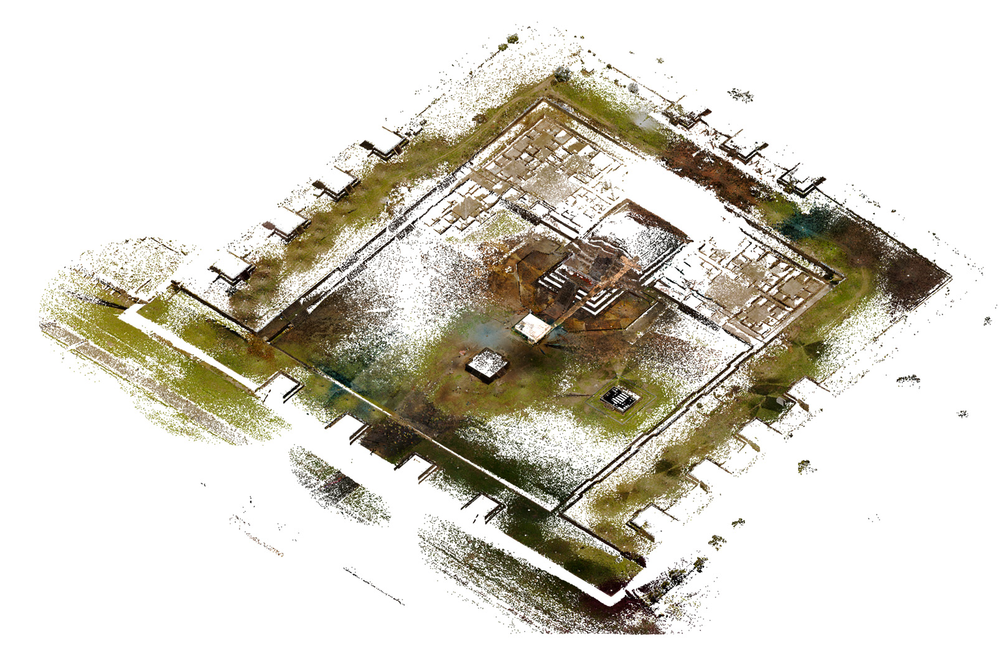
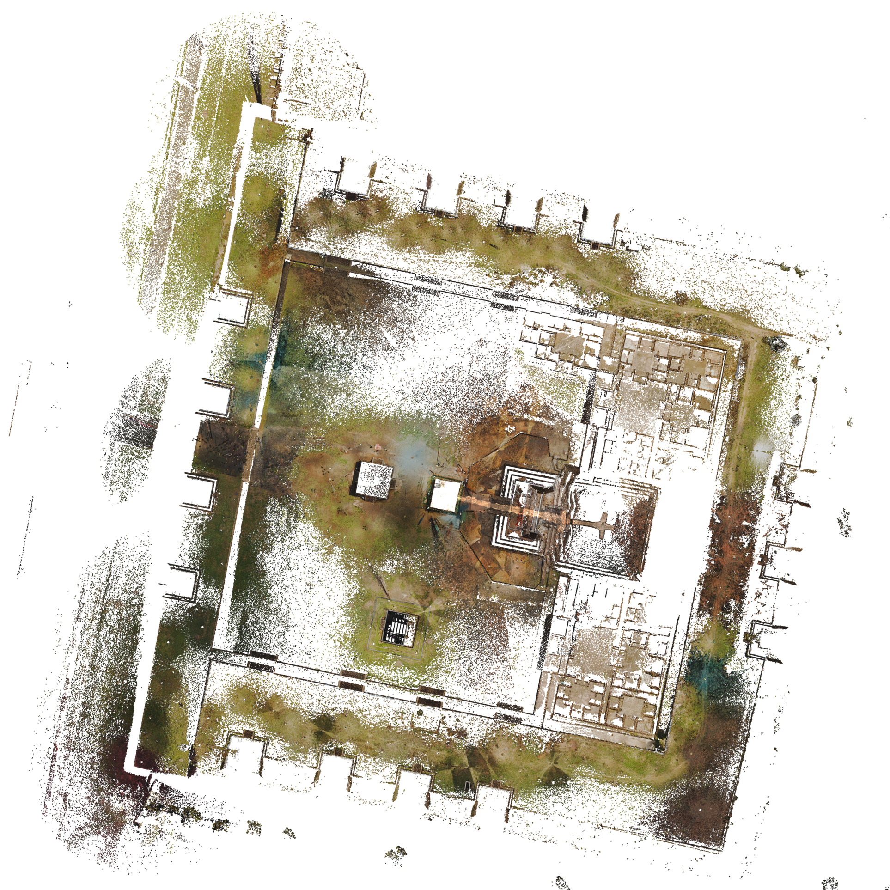
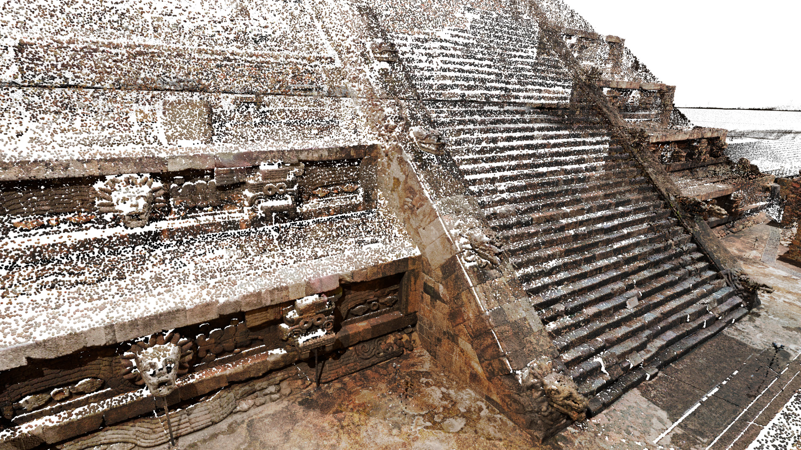
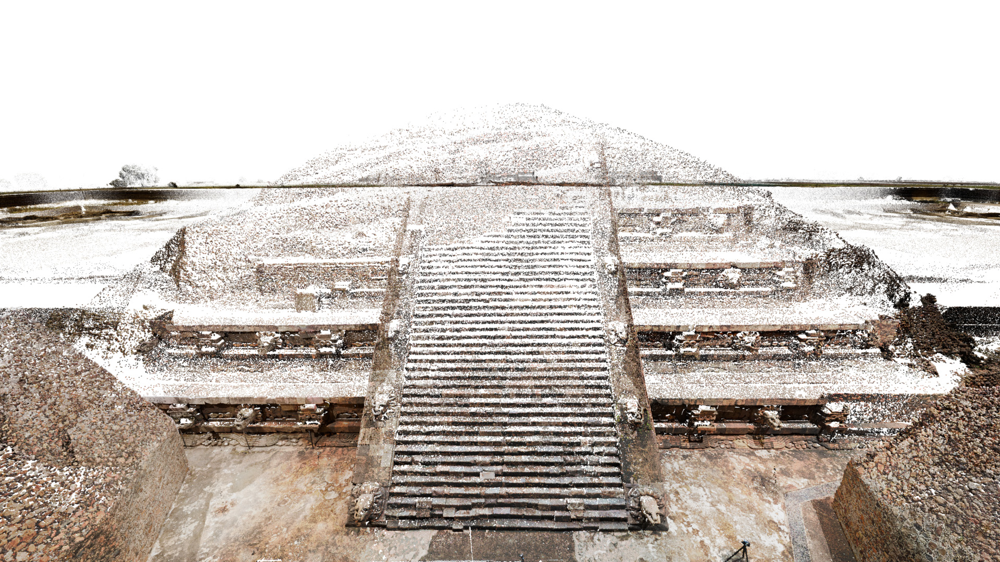

EIPC carried out a comprehensive digital documentation initiative at the Temple of the Feathered Serpent in Teotihuacan, one of Mesoamerica’s most iconic and enigmatic ceremonial complexes. Located approximately 40 minutes northeast of Mexico City, Teotihuacan was a major cultural and political center, and this temple—known for its elaborate stone facade featuring carved feathered serpents and figures often associated with the rain god Tlaloc—sits at the heart of the Ciudadela, a vast sunken plaza encircled by stepped platforms and walls.
In collaboration with site archaeologists and cultural heritage officials, EIPC used advanced LiDAR scanning and photogrammetry to capture the temple’s intricate surface detail, the expansive plaza that surrounds it, and a subterranean tunnel discovered in 2003 by archaeologist Dr. Sergio Gómez Chávez. This tunnel, sealed for centuries and excavated over the past two decades, yielded more than 300,000 artifacts—many of which were also digitally recorded during the project.
The scans offer extraordinary potential for both conservation and interpretation. They provide a precise baseline to monitor environmental threats such as acid rain, seismic activity, and pollution. Future uses include digitally reconstructing the inaccessible tunnel environment for public education and research, and potentially producing physical casts of tool markings or sculptural details for analysis. This effort represents a critical step in the long-term preservation of Teotihuacan’s cultural legacy and exemplifies how reality capture can expand access to fragile heritage environments while supporting archaeological inquiry.